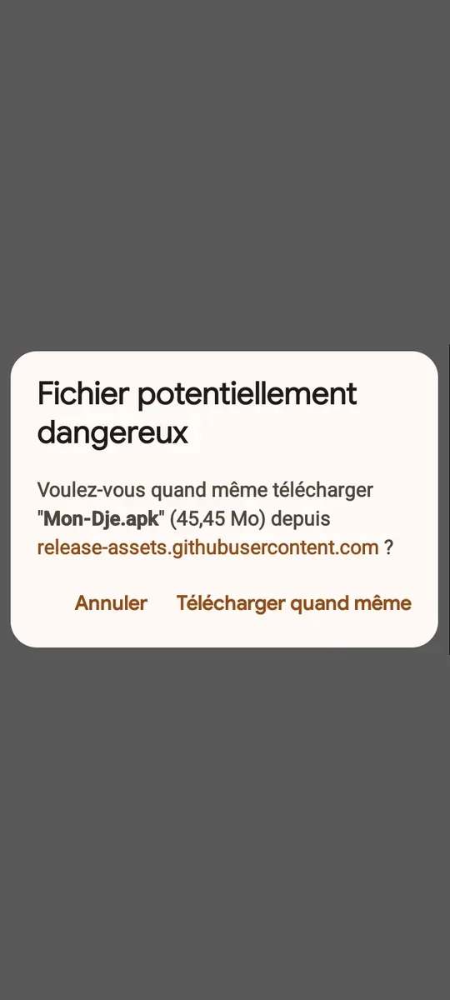
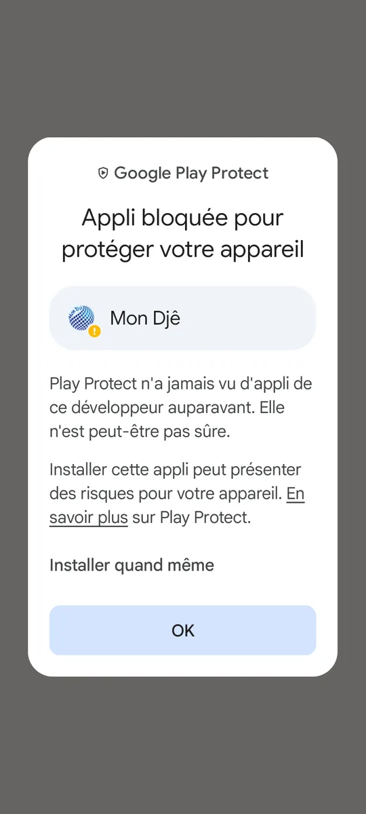

Télécharger Mon Djê pour Android
Un fichier à télécharger, quatre gestes à faire. Comptez deux minutes. Pour l'instant l'application s'installe depuis cette page ; elle arrivera aussi sur le Play Store.
Pour Android 7 ou plus récent · environ 45 Mo
Les quatre étapes
1. Ouvrez le fichier
Quand le téléchargement est fini, touchez la notification « Mon-Dje.apk », ou ouvrez l'application Mes fichiers puis le dossier Téléchargements, et touchez Mon-Dje.apk.

2. Autorisez l'installation
Android demande si vous autorisez ce navigateur (ou « Mes fichiers ») à installer des applications. Touchez Paramètres, activez Autoriser depuis cette source, puis revenez en arrière.
Vous pourrez retirer cette autorisation ensuite, dans les paramètres du téléphone.

3. Si Android affiche un avertissement
Il peut écrire « Application non vérifiée » ou « Bloquer l'installation ? ». C'est normal pour une application qui n'est pas encore sur le Play Store. Touchez Plus de détails, puis Installer quand même.

4. Ouvrez Mon Djê
Touchez Ouvrir. Au premier lancement, choisissez Ouvrir un compte pour mon commerce, ou saisissez le code que nous vous avons donné.

Mises à jour
Quand une nouvelle version existe, l'application vous le dit. Téléchargez le nouveau fichier ici et installez-le par-dessus l'ancien : vous gardez vos données et vous restez connecté. Ne désinstallez pas l'ancienne version avant.
Vérifier le fichier (facultatif)
Pour les plus prudents : l'empreinte du fichier doit être la suivante.
…
Ça ne marche pas ?
- « L'application n'est pas installée » : vous avez peut-être une ancienne version de test. Désinstallez-la, puis recommencez.
- Pas assez de place : libérez environ 150 Mo, puis recommencez.
- Le téléchargement s'arrête : connectez-vous en Wi-Fi ou rechargez des données, puis relancez le téléchargement.
- Autre souci : écrivez-nous sur WhatsApp au 05 65 75 03 03, nous vous aidons.